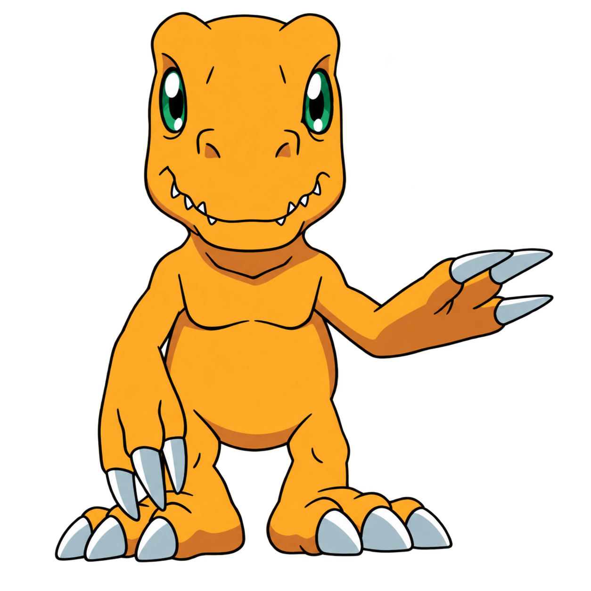

DIGI-PET
Um pequeno mundo. Um grande vínculo. BONDS / DIGI-PET LINK ESTÁVEL
Saciedade65/100
Humor60/100
Energia70/100
Companhia65/100


01 / QUARTO DIGITAL

AGUMONUm pequeno mundo fica melhor com companhia.
☾ DESCANSANDO
TRANQUILO
SEM ÁUDIO
Um tempo com Agumon.PEQUENOS CUIDADOS, BOA COMPANHIA
Pronto para o primeiro cuidado.